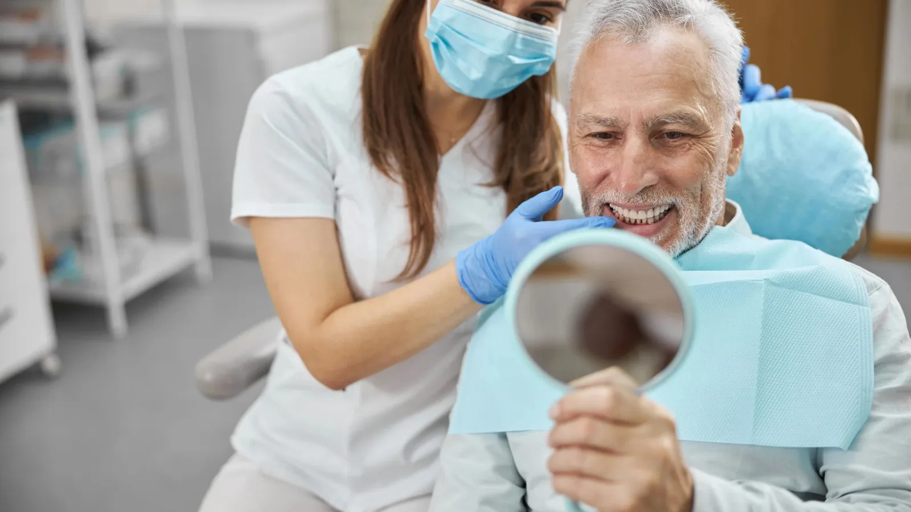

Our services
Replacing a missing tooth, properly.
A dental implant is a small titanium post placed into the jawbone to take the place of a missing tooth root. Once the bone has healed around it, a crown is attached on top. Done well, it functions much like a natural tooth and does not rely on the teeth either side of the gap.
Implants are not right for everyone. Bone volume, gum health, general health, smoking and grinding all affect whether an implant is a sensible option and how it is likely to hold up. That assessment comes first, and it is honest.

Placed and restored in-house
Dr Meg both places implants and restores them, which means one clinician from planning through to the final crown. In many practices those two stages are split between a surgeon and a general dentist. Keeping it together means fewer handovers and a plan built with the finished crown in mind from the beginning.
Planning uses 3D cone beam (CBCT) imaging to assess bone volume and the position of nerves and sinuses before anything is placed.
The systems we use
We use [IMPLANT BRAND — PENDING CLIENT SIGN-OFF] implant systems, manufactured in Switzerland. They are a long-established system with a substantial body of published research and readily available components — which matters years down the track if anything ever needs servicing or replacing.
What we do and do not offer
Single implants and multiple implants, including implant-supported bridges, for suitable cases. Bone grafting where the site needs building up first.
All-on-4 and full-arch implant treatment is not currently offered.
What sits under dental implants
Single Tooth Implants
— one implant and crown replacing one missing tooth
Multiple Implants & Implant Bridges
— replacing several teeth in a row
Bone Grafting for Implants
— building up the site where bone volume is insufficient
Common questions
Typically several months from placement to the final crown, because the bone needs time to fuse to the implant. The exact timeline depends on the site, whether grafting is needed and how you heal. You will be given an expected timeline at your planning appointment.
Implant placement is done under local anaesthetic and most people describe it as more manageable than they expected, though everyone’s experience differs. There is usually some soreness and swelling afterwards, which we will prepare you for.
That can only be answered after an examination and 3D imaging. Bone volume, gum health, medical history, medications and smoking all come into it.
Yes. Dr Meg does both. In many practices those stages are split between a surgeon and a general dentist, which means a handover part-way through.
A bridge, a partial denture, or in some cases leaving the gap. Each is discussed with its costs and trade-offs rather than implants being presented as the only option.
Much like a natural tooth — brushing, cleaning between the teeth, and regular check-ups. The gum and bone around an implant can become inflamed if neglected, so maintenance is not optional.